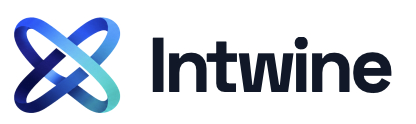

Intwine Intwine is the team behind StratoWeave. We help service providers build and maintain intent-based orchestration, without architectural lock-in.Partners
Organizations in the StratoWeave ecosystem.
Implementation partners
The following organizations can help you design, migrate, and operate orchestration with StratoWeave.
If you are an integrator or consultancy working with service provider customers, and you have expertise in orchestration strategy, migration, service modeling, or production support, reach out to the maintainers to discuss being listed as a partner.